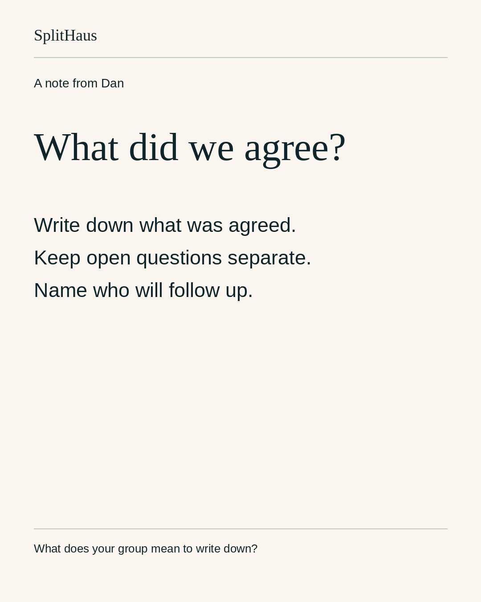
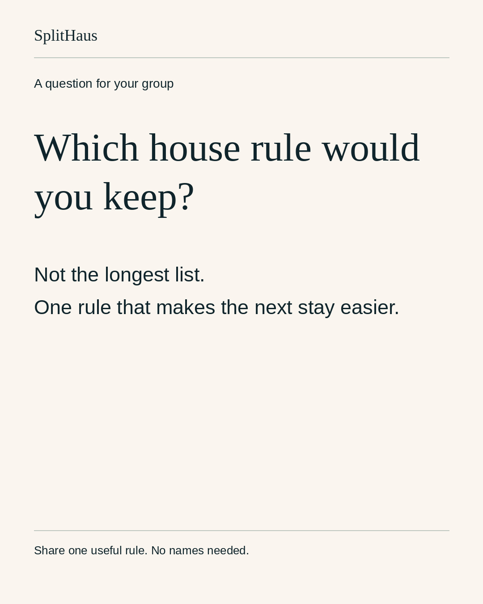

Decision: approve the exact copy, cards, public-demo sequence and Episode4 cut below for these accounts and times. Episode4 includes the existing Heartwarming piano mix; please decide on that exact soundtrack. New media are not covered by earlier strategy or blanket text approval.
Episode4: Meet Marcus
61.875-second narrated vertical story. Existing music and narration retained unchanged. No silent substitution. Animation is fictional, not a founder memory or customer testimonial.
SHA-256: e07610eb08b5c97d67540d82cfb56488ede04a22e90a720547e23ec2168f915f
Music: "Heartwarming" by Kevin MacLeod (https://incompetech.com), CC BY 4.0: https://creativecommons.org/licenses/by/4.0/ . Excerpted and mixed under narration.
Instagram feed and conditional founder Story
DANIG-04-TUE | @danatsplithaus
2026-11-10T18:00:00-08:00 Pacific | STAGED_NOT_SUBMITTED

Media SHA-256: 8bb54b42f7daea4f06626cb3d223435e683fbb3e3475ecc9ce98b37f9185f4ca
A house conversation can feel settled until everyone remembers it differently.
Write down what was agreed, what is still open, and who follows up. That can be more useful than making the next conversation longer.
What does your group always mean to write down?
Caption SHA-256: 0f4c3420578107eb5d67fa85279006cbac912654a3a458e23062c2c466005419
IG-SH-11 | @splithaushq
2026-11-11T18:00:00-08:00 Pacific | STAGED_NOT_SUBMITTED

Media SHA-256: e98a3b43474631a507e135c49006a30a296f01da268ebf3e5596db45255f4b78
Which shared-house rule would you keep even if you started over?
Not the longest list. One rule that makes the next stay easier for everyone.
Tell us one useful rule, without naming anyone. We will ask before sharing a response.
Caption SHA-256: cb5901d0198c4765a09e6644080570f5d694a4a773ebeaab54ae7bbf899f8dec
IG-SH-10 | @splithaushq
2026-11-09T12:00:00-08:00 Pacific | STAGED_NOT_SUBMITTED
Media SHA-256: 6ba149a20064ab200e72fe3a155b44a506b664cbd261cb76b3ba76d4efb19649
We track shared costs. We do not move your money.
This public website demo uses fictional bills. Add a cost, see what each group owes, then record a payment made outside SplitHaus. Your group keeps paying the way it already does.
Explore Shared Costs through the link in our bio.
Caption SHA-256: eeaae1b21dc3f0d81bbe37120a01574060934b7223c5d43e94c0d08853cda415
IG-SH-12 | @splithaushq
2026-11-13T12:00:00-08:00 Pacific | STAGED_NOT_SUBMITTED
Media SHA-256: e07610eb08b5c97d67540d82cfb56488ede04a22e90a720547e23ec2168f915f
What small gesture makes someone feel welcome?
The Houses / Loon Point 04: Meet Marcus. An original animated story from SplitHaus.
Music: "Heartwarming" by Kevin MacLeod (https://incompetech.com), CC BY 4.0: https://creativecommons.org/licenses/by/4.0/ . Excerpted and mixed under narration.
Caption SHA-256: a5f8b7009adc169d872eec2fe7bd76359645e9019392db0d0de6d5e89c6fe252
DANIG-04-FRI | @danatsplithaus
2026-11-13T18:00:00-08:00 Pacific | STAGED_NOT_SUBMITTED
What small gesture makes someone feel welcome?
Our Loon Point story is over at @splithaushq.
Caption SHA-256: 25cace96fd5764bba3ed2b77734812858427128ce1ed524d78baa8fddf881dfb
Only reshare the exact verified brand Reel after IG-SH-12 is live. No placeholder URL or copied video.
Dan Instagram is outside business portfolio; supported authenticated publishing path not verified. No account linking or challenge bypass.
X: Dan only
X-SH-10 | @danatsplithaus
2026-11-09T12:00:00-08:00 Pacific | STAGED_NOT_SUBMITTED
Media SHA-256: 6ba149a20064ab200e72fe3a155b44a506b664cbd261cb76b3ba76d4efb19649
Shared Costs in SplitHaus records payments made outside the app. It does not move money between members. Your group keeps paying the way it already does. https://www.splithaus.com/?utm_source=x&utm_medium=organic_social
Caption SHA-256: 3ec9dc31526224a371b4ca1cb02212777cc9868e6237f61e0bc716ab072fd64a
X-SH-11 | @danatsplithaus
2026-11-11T18:00:00-08:00 Pacific | EXISTING_APPROVED_TEXT_PRESERVED
Which shared-house rule would you keep even if you started over? Not the most elaborate one—the one that makes the next stay easier.
Caption SHA-256: adadd27c9f1c21ee8ccdb10ad5b17d52510a2d7ab7b9ba253efdf018468be9fd
Original runtime approval remains separate; this builder changes no runtime state.
X-SH-12 | @danatsplithaus
2026-11-13T12:00:00-08:00 Pacific | STAGED_NOT_SUBMITTED
Media SHA-256: e07610eb08b5c97d67540d82cfb56488ede04a22e90a720547e23ec2168f915f
What small gesture makes someone feel welcome? Loon Point 04: Meet Marcus. An animated story from SplitHaus.
Music: Heartwarming, Kevin MacLeod, https://incompetech.com, CC BY 4.0 https://creativecommons.org/licenses/by/4.0/ (excerpted/mixed).
Caption SHA-256: eb61b0727d8967aaea1f85c50a28d3cd5f7ae6327d905cac3af3a418d7832238
Facebook: SplitHaus Page
FB-SH-11 | SplitHaus Page
2026-11-11T18:00:00-08:00 Pacific | STAGED_NOT_SUBMITTED
Media SHA-256: e98a3b43474631a507e135c49006a30a296f01da268ebf3e5596db45255f4b78
Which shared-house rule would you keep even if you started over?
Not the longest list. One rule that makes the next stay easier for everyone.
Tell us one useful rule, without naming anyone. We will ask before sharing a response.
Caption SHA-256: cb5901d0198c4765a09e6644080570f5d694a4a773ebeaab54ae7bbf899f8dec
FB-SH-10 | SplitHaus Page
2026-11-09T12:00:00-08:00 Pacific | STAGED_NOT_SUBMITTED
Media SHA-256: 6ba149a20064ab200e72fe3a155b44a506b664cbd261cb76b3ba76d4efb19649
We track shared costs. We do not move your money.
This public website demo uses fictional bills. Add a cost, see what each group owes, then record a payment made outside SplitHaus. Your group keeps paying the way it already does.
Explore Shared Costs: https://www.splithaus.com/#how-money
Caption SHA-256: 365596956ce9ecf95b2d4a5c64311e5eeed1dd760d3aae789f8fcb29086fd007
FB-SH-12 | SplitHaus Page
2026-11-13T12:00:00-08:00 Pacific | STAGED_NOT_SUBMITTED
Media SHA-256: e07610eb08b5c97d67540d82cfb56488ede04a22e90a720547e23ec2168f915f
What small gesture makes someone feel welcome?
The Houses / Loon Point 04: Meet Marcus. An original animated story from SplitHaus.
Music: "Heartwarming" by Kevin MacLeod (https://incompetech.com), CC BY 4.0: https://creativecommons.org/licenses/by/4.0/ . Excerpted and mixed under narration.
Caption SHA-256: a5f8b7009adc169d872eec2fe7bd76359645e9019392db0d0de6d5e89c6fe252
All seven days
2026-11-09
IG-SH-10 12:00 @splithaushq | FB-SH-10 12:00 SplitHaus Page | X-SH-10 12:00 @danatsplithaus
2026-11-10
DANIG-04-TUE 18:00 @danatsplithaus
2026-11-11
IG-SH-11 18:00 @splithaushq | FB-SH-11 18:00 SplitHaus Page | X-SH-11 18:00 @danatsplithaus
2026-11-12
No fixed release. No automatic repost.
2026-11-13
IG-SH-12 12:00 @splithaushq | FB-SH-12 12:00 SplitHaus Page | X-SH-12 12:00 @danatsplithaus | YT-SH-12 12:00 @splithaus | DANIG-04-FRI 18:00 @danatsplithaus
2026-11-14
No fixed release. No automatic repost.
2026-11-15
No fixed release. No automatic repost.
No brand-X calendar is added. Story amplification waits for the actual live brand Reel. Saturday and Sunday contain no extra fixed publishing commitments.